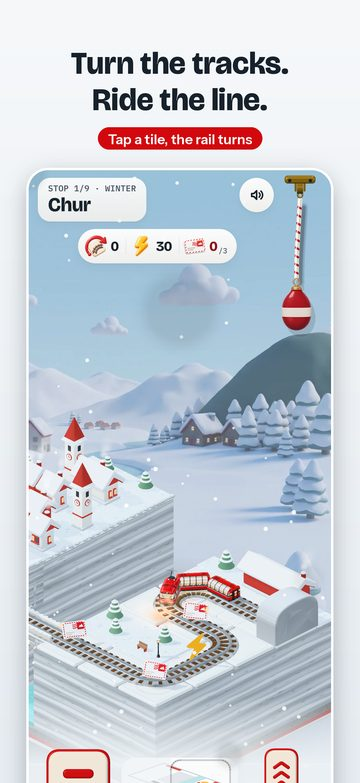
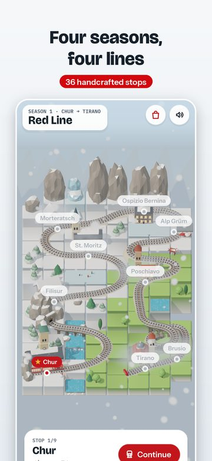
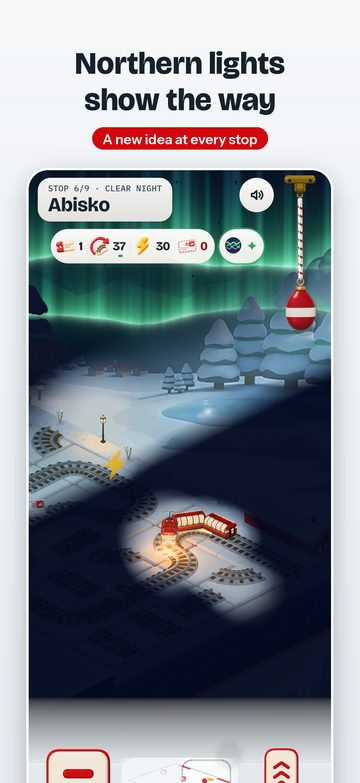
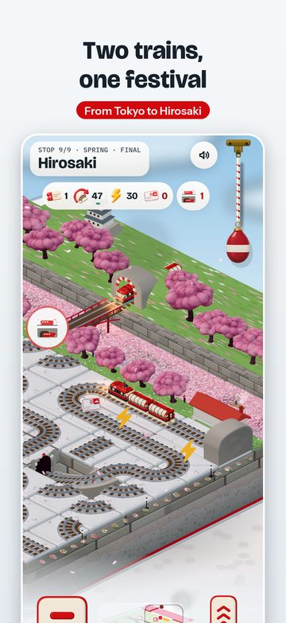

Grandpa's Train
Rail Puzzle · for iPhone
Turn the tiles. Pull the cord. Off we go.
A cozy track-turning puzzle. Join the rails, light the line and bring Grandpa's little red train home, from the Alps to under the Bosphorus and across Japan.
Get it free on the App Store- Free to play
- No ads
- 4 lines · 36 stops
- No account needed
Four seasons, four lines




How it plays: tap a tile to turn its track. When the route is ready, pull the cord and the train sets off. Hold the pedal to speed up, collect postcards on the way and pull into the station.
Every stop brings a new idea: ferries, snowdrifts, tunnels, northern lights and cherry blossoms.